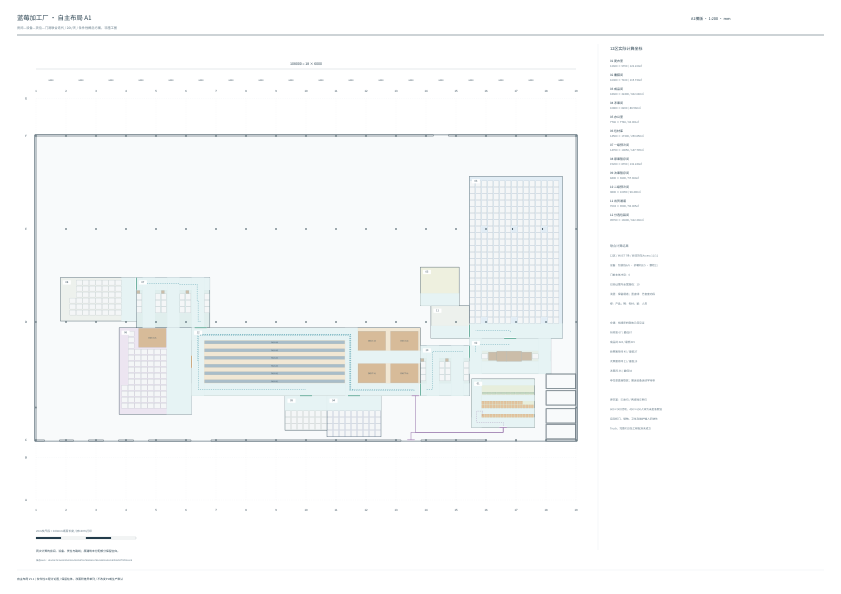

同次程序计算12区、设备、货位、门洞和实际路线。原P1最低需求与固定尺寸保持；柔性房间根据功能几何反馈扩大。不是施工图、工程批准或完整P2D。
A1 1:200 PDF · SVG · 完整坐标和见证JSON · 两班53人运动 · 逐货位取放 · 失败与迭代反馈

| 房间 | mm | 面积㎡ | 柱体㎡ |
|---|---|---|---|
| 更衣室 | 12600×9700 | 122.22 | 0 |
| 覆膜间 | 16300×7100 | 115.73 | 0 |
| 成品间 | 18600×32400 | 602.64 | 0.3603 |
| 冻果间 | 10800×8200 | 88.56 | 0 |
| 办公室 | 7746×7746 | 60.000516 | 0 |
| 包材库 | 14500×17300 | 250.85 | 0 |
| 一级预冷间 | 14700×10050 | 147.735 | 0.1212 |
| 原果暂存间 | 15200×8700 | 132.24 | 0 |
| 次果暂存间 | 8400×6900 | 57.96 | 0 |
| 二级预冷间 | 9800×10050 | 98.49 | 0 |
| 出货通道 | 7693×6500 | 50.0045 | 0.0606 |
| 分选包装间 | 45760×13600 | 622.336 | 0 |
取货时保留其他存货，放货按实测反向顺序验证。只证明指定荷载包络的几何，不证明叉车转弯、任意顺序存取或运营批准。
| 库房 | 货位/最低 | 实际路径见证 |
|---|---|---|
| packaging_material_storage | 67/67 | 67取 / 67放 |
| finished_goods_room | 324/315 | 324取 / 324放 |
| raw_fruit_buffer | 45/37 | 45取 / 45放 |
| secondary_fruit_buffer | 21/19 | 21取 / 21放 |
| frozen_fruit_room | 36/34 | 36取 / 36放 |
两班独立分配柜格，进入、初始53人在室、柜前往返、600×900mm活动区、两种假设铰链及离室分别计算。 当前条件完整序列：True。 柜体净尺寸、实际铰链、人体尺度、衣物卫生、门扇和运营时间仍为INPUT_REQUIRED。
搬运设备运动学、冷却性能、实际设备维护空间、Truck、完整P2D、整厂适用性及工程批准未成立。货位顺序、人员单人移动与材料操作均为待审条件模型。
[]